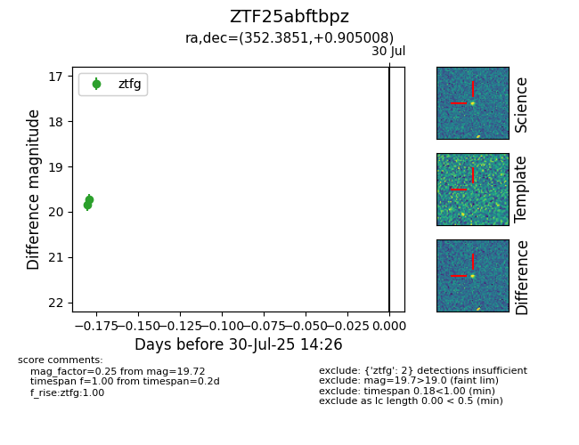

Target ZTF25abftbpz at 2025-07-30 14:26, see:
FINK: fink-portal.org/ZTF25abftbpz
Lasair: lasair-ztf.lsst.ac.uk/objects/ZTF25abftbpz
ALeRCE: alerce.online/object/ZTF25abftbpz
alt names
ZTF25abftbpz (ztf,fink)
coordinates:
equatorial (ra, dec) = (352.3851,+0.90501)
galactic (l, b) = (84.5265,-55.73681)
photometry
last ztfg=19.72
2 ztfg detections
